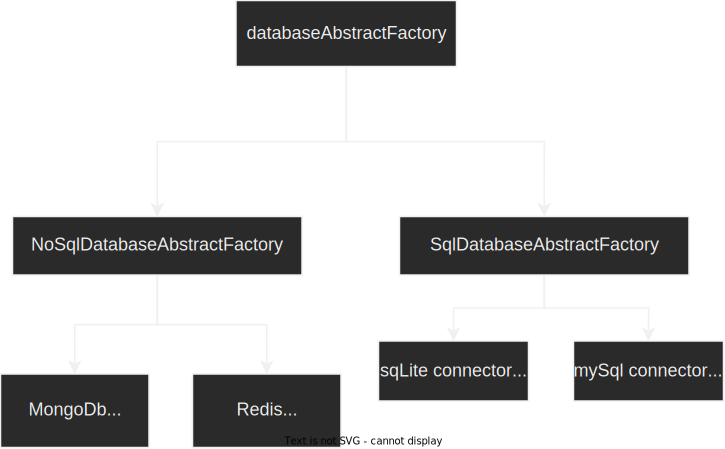

-
Singleton :
گاهی اوقات در سیستم کلاسی داریم که میخواهیم فقط یک instance از ان ساخته شود !!!
با استفاده از این design pattern این کار امکان پذیر است !!!
-
FactoryMethod :
گاهی اوقات در سیستم کلاسی داریم که
گاها در چندین unit با پارامتر های یکسانی
از ان کلاس instance میسازیم !!!
instance ساختن از روی ان کلاس به دلیل
ورودی های یکسان متد constructor
میتواند کار تکراری و سخت و هزینه بر و زمانبر باشد !!!
این design pattern وظیفه ساخت
object از روی یک class و یا چندین class را بر عهده دارد
-
AbstractFactory :
دیزاین پترن AbstractFactory وظیفه ساخت object از روی سایر
کلاس های factory را دارد !!!
یعنی AbstractFactory پلی است برای دسترسی به سایر factory های یک
موضوع و یا entity !!!
و در جایی استفاده میشود که معمولا بخواهیم یک factory کلی و عمومی تر
برای factory های یک entity و یا یک موضوع ایجاد کنیم !!!
مثلا :

-
Builder :
گاهی اوقات در سیستم کلاسی داریم که در زمان instantiate
پارامتر های زیادی را از طریق متد construct
میگیرد و دیتاهایی که به متد constructor کلاس مورد نظرمان برای هر instance
پاس میدهیم عموما متفاوت از دیگر instance هایی است
که از روی ان کلاس ساخته شده اند !!!
که این باعث میشود ساخت instance از روی ان کلاس هزینه بر و سخت بشود و
همچنین کد برنامه نویسی که از ان کلاس استفاده میکند کثیف بشود !!!
برای حل این مشکل ما نمیتوانیم از فکتوری استفاده کنیم
زیرا فکتوری عموما برای زمانی استفاده میشود که بخواهیم داده های یکسانی
برای هر instance به متد construct پاس بدهیم !!! و برای حل این مشکل باید از
دیزاین پترن builder استفاده کنیم تا با استفاده از ان
object مورد نظر خودمان را build کنیم !!!
-
Prototype :
گاهی اوقات در سیستم میخواهیم از یک کلاسی که
instantiate از ان سخت و هزینه بر و زمانبر است یک object بسازیم !!!
مثلا متد constructor آن کلاس پارامتر های زیادی دارد
ویا مثلا پارامتر های متد construct را از دیتابیس و یا از سرور دیگری دریافت میکنیم
که این باعث میشود زمان زیادی برای دریافت داده گرفته شود !!!
و سپس در طول کد نویسی ممکن است نیاز باشد تا یک object دیگر
مشابه با ان object نیاز داشته باشیم اما ما میدانیم instantiate از
ان class خیلی زمانبر و سخت است!!
این دیزاین پترن به object های ما این امکان را
به ما میدهد که clone و copy شوند !!!